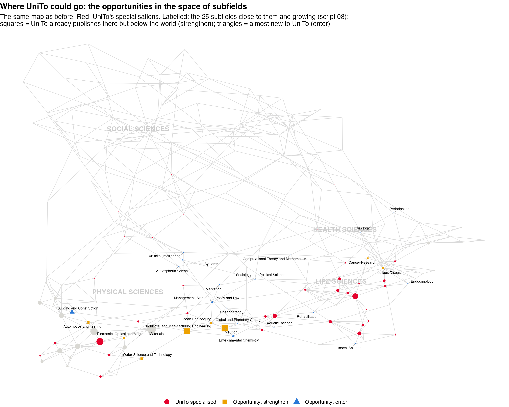

Plot.plot({
width, height: 520,
x: {label: "Closeness to UniTo's strengths (density) →", grid: true},
y: {label: "↑ Growth (share 2020–25 / share 2010–19)", grid: true},
color: {domain: quadrants, range: ["#c8102e", "#eda100", "#2a78d6", "#b4b2a9"], legend: true},
r: {range: [2, 14]},
marks: [
Plot.ruleY([1], {stroke: "#888", strokeDasharray: "4 3"}),
Plot.dot(notSpecialised, {x: "density", y: "growth", r: "works", fill: "quadrant", fillOpacity: 0.75,
stroke: "white", strokeWidth: 0.5,
title: d => `${d.subfield} (${d.field})\nUniTo: ${d.unito_papers} publications\ngrowth ×${d.growth}\nmain category: ${d.main_category}${d.action ? "\nsuggestion: " + d.action : ""}`,
tip: true})
]
})UniTo: where it stands and where it could go
Research areas close to UniTo’s strengths, and its partners
Provisional results. The corpora are being validated: every number may change.
The University of Turin (UniTo) has about 300 publications on sustainable plastics. The Sustainability profile and Indicators pages show what it does and how it compares with Politecnico di Torino. This page looks ahead, with one idea: an organisation grows most easily into areas, and with partners, that are close to what it already does (proximity).
Research areas close to UniTo’s strengths
Each circle is a research area (an OpenAlex subfield) in which UniTo is not yet specialised. To the right, the area is closer to UniTo’s current strengths: it is related to many areas where UniTo is already specialised (two areas are related when the same institutions around the world tend to be specialised in both). Higher up, the area grows faster than research on sustainable plastics as a whole (its share of the publications in 2020–2025 compared with 2010–2019; above the dashed line, it is growing). The areas that are both close and growing are the natural candidates: to strengthen where UniTo already has some publications, to enter where it has few.
Circle size: the publications of the area in the whole corpus. Hover on a circle for details. The table lists the areas that are close and growing.
The map below places every research area so that related areas are close together. The highlighted areas are the opportunities above.

UniTo’s partners in Piedmont, Italy and Europe
Every institution in Europe that has published on sustainable plastics with UniTo, and the new candidates: institutions that have never published with UniTo but are likely to, given their proximity to UniTo (in topics, in space, and through common partners). The likelihood comes from a model trained on how new collaborations between European universities started in 2020–2025.
Circle size: joint publications with UniTo. Click on a circle for details. Partners outside Europe are not shown.
The position paper of the project (section 6, Strategies for UniTo) discusses these results, together with the companies that use UniTo’s research.